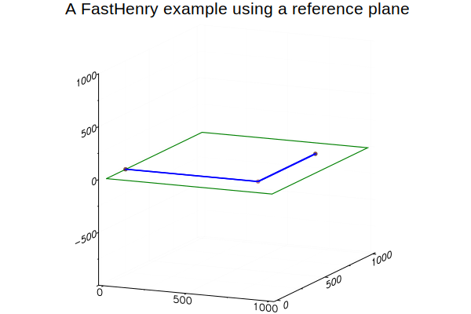
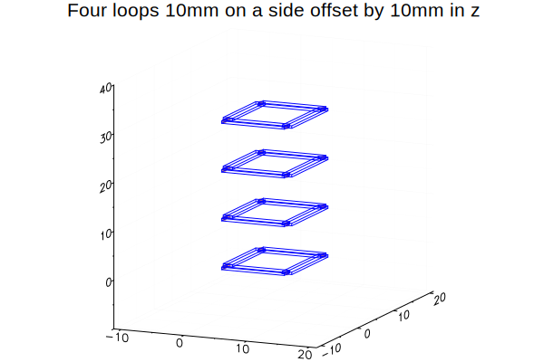
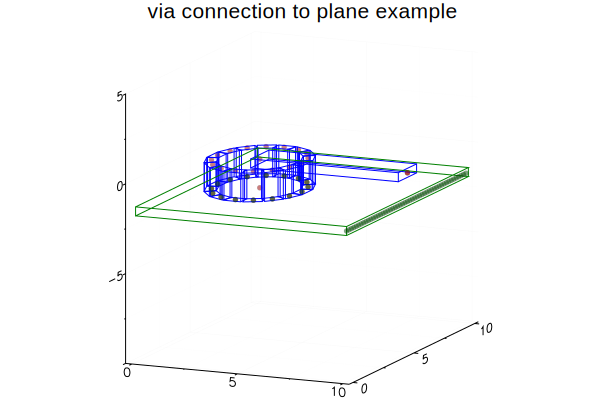
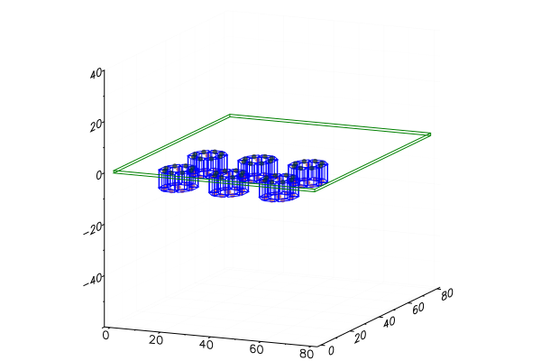

Examples
Example 1: A simple example from the FastHenry documentation.
This example is a recreation of the example in section 1.2 of "FastHenry User's Guide" using FastHeneryHelper.
load the module
using FastHenryHelperCreate a group of FastHenry elements for FastHenry to compute the loop inductance of an L shaped trace over a ground plane with the trace's return path through the plane.
sp = SegmentParameters(w=8,h=1)
nin = Node("in",800,800,0)
nout = Node("out",0,200,0)
n1 = Node("1",0,200,1.5)
n2 = Node(800,200,1.5)
n3 = Node(800,800,1.5)
example1 = Group(
elements = [
Comment("A FastHenry example using a reference plane"),
Units("mils"),
UniformPlane(
x1=0, y1=0, z1=0,
x2=1000, y2=0, z2=0,
x3=1000, y3=1000, z3=0,
thick= 1.2,
seg1=20, seg2=20,
nodes=[nin, nout]),
Default(SegmentParameters(sigma=62.1e6*2.54e-5,nwinc=8, nhinc=1)),
n1,
n2,
n3,
Segment(n1,n2,sp),
Segment(n2,n3,sp),
Equiv([nin,n3]),
External(n1,nout),
Freq(min=1e-1, max=1e9, ndec=0.05),
End()
]
)* A FastHenry example using a reference plane
.units mils
G_1
+ x1=0.000000000e+00 y1=0.000000000e+00 z1=0.000000000e+00
+ x2=1.000000000e+03 y2=0.000000000e+00 z2=0.000000000e+00
+ x3=1.000000000e+03 y3=1.000000000e+03 z3=0.000000000e+00
+ thick=1.200000000e+00 seg1=20 seg2=20
+ Nin (8.000000000e+02,8.000000000e+02,0.000000000e+00)
+ Nout (0.000000000e+00,2.000000000e+02,0.000000000e+00)
.default
+ nhinc=1 nwinc=8
+ sigma=1.577340000e+03
N1 x=0.000000000e+00 y=2.000000000e+02 z=1.500000000e+00
N_2 x=8.000000000e+02 y=2.000000000e+02 z=1.500000000e+00
N_3 x=8.000000000e+02 y=8.000000000e+02 z=1.500000000e+00
E_4 N1 N_2
+ w=8.000000000e+00 h=1.000000000e+00
E_5 N_2 N_3
+ w=8.000000000e+00 h=1.000000000e+00
.equiv Nin N_3
.external N1 Nout
.freq fmin=1.000000000e-01 fmax=1.000000000e+09 ndec=5.000000000e-02
.endWrite example1 to a file.
open("example1.inp","w") do io
show(io,example1)
endGroups may be transformed. To demonstrate, example1 is rotated 90deg around x,y,and z axis.
transform!(example1,rx(0.5π)*ry(0.5π)*rz(0.5π)) # must keep plane parallel to xy, xz, or yz planeWrite rotated example1 to a file
open("example1_rotated.inp","w") do io
show(io,example1)
endcalling push! on a Group will push into the groups elements.
# same example, using push!
example1 = Group()
push!(example1,Comment("A FastHenry example using a reference plane"))
push!(example1,Units("mils"))
nin = Node("in",800,800,0)
nout = Node("out",0,200,0)
push!(example1,UniformPlane(x1=0, y1=0, z1=0, x2=1000, y2=0, z2=0, x3=1000, y3=1000, z3=0,
thick= 1.2, seg1=20, seg2=20, nodes=[nin, nout]))
push!(example1,Default(SegmentParameters(sigma=62.1e6*2.54e-5,nwinc=8, nhinc=1)))
n1 = Node("1",0,200,1.5)
push!(example1,n1)
n2 = Node(800,200,1.5)
push!(example1,n2)
n3 = Node(800,800,1.5)
push!(example1,n3)
sp = SegmentParameters(w=8,h=1)
push!(example1,Segment(n1,n2,sp))
push!(example1,Segment(n2,n3,sp))
push!(example1,Equiv([nin,n3]))
push!(example1,External(n1,nout))
push!(example1,Freq(min=1e-1, max=1e9, ndec=0.05))
push!(example1,End());Plot of example1
using Plots; gr()
plot(example1)/home/travis/.julia/packages/GR/joQgG/src/../deps/gr/bin/gksqt: error while loading shared libraries: libQt5Widgets.so.5: cannot open shared object file: No such file or directory
connect: Connection refused
GKS: can't connect to GKS socket application
Did you start 'gksqt'?
GKS: Open failed in routine OPEN_WS
GKS: GKS not in proper state. GKS must be either in the state WSOP or WSAC in routine ACTIVATE_WS
Example 2: Four square loops
This example demonstrates using groups to simplify repetitive structures.
Load the module.
using FastHenryHelperCreate a group for one square loop 10mm on a side.
n1 = Node(0,0,0)
n2 = Node(10,0,0)
n3 = Node(10,10,0)
n4 = Node(0,10,0)
n5 = Node(0,1,0) # leave a 1mm gap for the port
squareloop = Group(
elements=[
Comment("loop start"),
n1,
n2,
n3,
n4,
n5, # leave a 1mm gap for the port
connectnodes([n1,n2,n3,n4,n5], SegmentParameters(h=0.5, w=1.5))...,
Comment("loop end")
],
terms = Dict(:a=>n1,:b=>n5) # ports will be between :a and :b
)* loop start
N_1 x=0.000000000e+00 y=0.000000000e+00 z=0.000000000e+00
N_2 x=1.000000000e+01 y=0.000000000e+00 z=0.000000000e+00
N_3 x=1.000000000e+01 y=1.000000000e+01 z=0.000000000e+00
N_4 x=0.000000000e+00 y=1.000000000e+01 z=0.000000000e+00
N_5 x=0.000000000e+00 y=1.000000000e+00 z=0.000000000e+00
E_6 N_1 N_2
+ w=1.500000000e+00 h=5.000000000e-01
E_7 N_2 N_3
+ w=1.500000000e+00 h=5.000000000e-01
E_8 N_3 N_4
+ w=1.500000000e+00 h=5.000000000e-01
E_9 N_4 N_5
+ w=1.500000000e+00 h=5.000000000e-01
* loop endCreate an array of four square loops, each one shifted 10mm on z axis.
loops = Array{Group}(undef,4)
z = [0.0, 10.0, 20.0, 30.0]
for i in eachindex(loops)
loops[i] = transform(squareloop, txyz(0,0,z[i]))
endCreate the top level group.
fourloops = Group(
elements=[
Comment("Four loops 10mm on a side offset by 10mm in z"),
Units("mm"),
Comment(""),
Comment("sigma for copper, 25 filaments per segment"),
Default(sigma=62.1e6*1e-3, nwinc=5, nhinc=5),
Comment(""),
Comment("the loops"),
loops...,
Comment(""),
Comment("define three ports"),
External(loops[3][:b],loops[4][:b],"port_1"),
External(loops[2][:a],loops[2][:b],"port_2"),
External(loops[1][:a],loops[1][:b],"port_3"),
Comment(""),
Comment("define frequencies"),
Freq(min=1e-1, max=1e9, ndec=0.05),
Comment(""),
Comment("always need end"),
End()
]
)* Four loops 10mm on a side offset by 10mm in z
.units mm
*
* sigma for copper, 25 filaments per segment
.default
+ nhinc=5 nwinc=5
+ sigma=6.210000000e+04
*
* the loops
* loop start
N_1 x=0.000000000e+00 y=0.000000000e+00 z=0.000000000e+00
N_2 x=1.000000000e+01 y=0.000000000e+00 z=0.000000000e+00
N_3 x=1.000000000e+01 y=1.000000000e+01 z=0.000000000e+00
N_4 x=0.000000000e+00 y=1.000000000e+01 z=0.000000000e+00
N_5 x=0.000000000e+00 y=1.000000000e+00 z=0.000000000e+00
E_6 N_1 N_2
+ w=1.500000000e+00 h=5.000000000e-01
+ wx=0.000000000e+00 wy=1.000000000e+00 wz=0.000000000e+00
E_7 N_2 N_3
+ w=1.500000000e+00 h=5.000000000e-01
+ wx=-1.000000000e+00 wy=0.000000000e+00 wz=0.000000000e+00
E_8 N_3 N_4
+ w=1.500000000e+00 h=5.000000000e-01
+ wx=0.000000000e+00 wy=-1.000000000e+00 wz=0.000000000e+00
E_9 N_4 N_5
+ w=1.500000000e+00 h=5.000000000e-01
+ wx=1.000000000e+00 wy=0.000000000e+00 wz=0.000000000e+00
* loop end
* loop start
N_10 x=0.000000000e+00 y=0.000000000e+00 z=1.000000000e+01
N_11 x=1.000000000e+01 y=0.000000000e+00 z=1.000000000e+01
N_12 x=1.000000000e+01 y=1.000000000e+01 z=1.000000000e+01
N_13 x=0.000000000e+00 y=1.000000000e+01 z=1.000000000e+01
N_14 x=0.000000000e+00 y=1.000000000e+00 z=1.000000000e+01
E_15 N_10 N_11
+ w=1.500000000e+00 h=5.000000000e-01
+ wx=0.000000000e+00 wy=1.000000000e+00 wz=0.000000000e+00
E_16 N_11 N_12
+ w=1.500000000e+00 h=5.000000000e-01
+ wx=-1.000000000e+00 wy=0.000000000e+00 wz=0.000000000e+00
E_17 N_12 N_13
+ w=1.500000000e+00 h=5.000000000e-01
+ wx=0.000000000e+00 wy=-1.000000000e+00 wz=0.000000000e+00
E_18 N_13 N_14
+ w=1.500000000e+00 h=5.000000000e-01
+ wx=1.000000000e+00 wy=0.000000000e+00 wz=0.000000000e+00
* loop end
* loop start
N_19 x=0.000000000e+00 y=0.000000000e+00 z=2.000000000e+01
N_20 x=1.000000000e+01 y=0.000000000e+00 z=2.000000000e+01
N_21 x=1.000000000e+01 y=1.000000000e+01 z=2.000000000e+01
N_22 x=0.000000000e+00 y=1.000000000e+01 z=2.000000000e+01
N_23 x=0.000000000e+00 y=1.000000000e+00 z=2.000000000e+01
E_24 N_19 N_20
+ w=1.500000000e+00 h=5.000000000e-01
+ wx=0.000000000e+00 wy=1.000000000e+00 wz=0.000000000e+00
E_25 N_20 N_21
+ w=1.500000000e+00 h=5.000000000e-01
+ wx=-1.000000000e+00 wy=0.000000000e+00 wz=0.000000000e+00
E_26 N_21 N_22
+ w=1.500000000e+00 h=5.000000000e-01
+ wx=0.000000000e+00 wy=-1.000000000e+00 wz=0.000000000e+00
E_27 N_22 N_23
+ w=1.500000000e+00 h=5.000000000e-01
+ wx=1.000000000e+00 wy=0.000000000e+00 wz=0.000000000e+00
* loop end
* loop start
N_28 x=0.000000000e+00 y=0.000000000e+00 z=3.000000000e+01
N_29 x=1.000000000e+01 y=0.000000000e+00 z=3.000000000e+01
N_30 x=1.000000000e+01 y=1.000000000e+01 z=3.000000000e+01
N_31 x=0.000000000e+00 y=1.000000000e+01 z=3.000000000e+01
N_32 x=0.000000000e+00 y=1.000000000e+00 z=3.000000000e+01
E_33 N_28 N_29
+ w=1.500000000e+00 h=5.000000000e-01
+ wx=0.000000000e+00 wy=1.000000000e+00 wz=0.000000000e+00
E_34 N_29 N_30
+ w=1.500000000e+00 h=5.000000000e-01
+ wx=-1.000000000e+00 wy=0.000000000e+00 wz=0.000000000e+00
E_35 N_30 N_31
+ w=1.500000000e+00 h=5.000000000e-01
+ wx=0.000000000e+00 wy=-1.000000000e+00 wz=0.000000000e+00
E_36 N_31 N_32
+ w=1.500000000e+00 h=5.000000000e-01
+ wx=1.000000000e+00 wy=0.000000000e+00 wz=0.000000000e+00
* loop end
*
* define three ports
.external N_23 N_32 port_1
.external N_10 N_14 port_2
.external N_1 N_5 port_3
*
* define frequencies
.freq fmin=1.000000000e-01 fmax=1.000000000e+09 ndec=5.000000000e-02
*
* always need end
.endPlot of fourloops
using Plots; gr() # use plotlyjs() or plotly() for interactive plot
plot(fourloops)/home/travis/.julia/packages/GR/joQgG/src/../deps/gr/bin/gksqt: error while loading shared libraries: libQt5Widgets.so.5: cannot open shared object file: No such file or directory
connect: Connection refused
GKS: can't connect to GKS socket application
Did you start 'gksqt'?
GKS: Open failed in routine OPEN_WS
GKS: GKS not in proper state. GKS must be either in the state WSOP or WSAC in routine ACTIVATE_WS
Write fourloops to file.
open("fourloops.inp","w") do io
show(io,fourloops)
endSee the output file fourloops.inp.
Example 3: Via connection between plane and segment
This example demonstrates the use of viagroup and planeconnect functions.
Load the module.
using FastHenryHelperConstants for a 63mil PCB with 1oz copper. Copper thickness is made much thicker than 1oz copper to make planes more visible in the plots.
const height = 1.6 # 63mil PCB
const cu_sigma = 5.8e4
# const cu_thick = 0.035 # 1oz copper
const cu_thick = 0.5 # exaggerate thickness0.5Create a function which returns a Group with all the elements of the FastHenry input file.
function via_connection_example(height, cu_thick)
t = Comment("via connection to plane example")
u = Units("mm")
# create a via with 16 segments
# botequiv = false will allow each segment
# to connect to the plane separately
via = viagroup(radius=2, height=height, h=cu_thick, nhinc = 1,
sigma=cu_sigma, n=16, topequiv = true, botequiv = false)
# move via into position
transform!(via, txyz(3.0,5.0,0.0))
top_port_node = Node(10,5,0)
# via[:top] is a node in the center of the top of the via. It
# is equiv to the ring of nodes at the top of the via segments.
topseg = Segment(via[:top], top_port_node, h=cu_thick, w=1.5)
# create a line of nodes along what will be the right side of the plane
bot_port = Array{Node}(undef,50)
y = 0.0
for i in eachindex(bot_port)
bot_port[i] = Node(10.0,y,-height)
y += 0.2
end
# short the line of vias. This will be one terminal of the external port.
bot_port_equiv = Equiv(bot_port)
# planeconnect retuns a deepcopy of the nodes, and a group of equiv's to
# connect them to the original nodes.
# via[:allbot] is an array of the 16 nodes around the bottom on the via
(bot_plane_nodes,bot_plane_nodes_equiv_group) = planeconnect(via[:allbot])
# create a plane with 100x100 segments.
# nodes connect to the external port and the bottom of the via
botplane = UniformPlane(
x1= 0.0, y1= 0.0, z1=-height,
x2= 0.0, y2=10.0, z2=-height,
x3=10.0, y3=10.0, z3=-height,
thick = cu_thick,
seg1=100, seg2=100,
sigma = cu_sigma,
nhinc = 5,
nodes = [bot_plane_nodes;bot_port]
)
# define the external port between the two lines of nodes
ex = External(top_port_node,bot_port[1])
# just want low frequency
f = Freq(min=0.1, max=1e9, ndec=0.05)
e = End() # always need an end
# return a group of the element we want for our FastHenry input file
Group([t; u; via;
top_port_node; topseg;
botplane; bot_plane_nodes_equiv_group;
bot_port_equiv; top_port_node;
ex; f; e])
endvia_connection_example (generic function with 1 method)Call the function with PCB height and copper thickness.
example3 = via_connection_example(height, cu_thick);Plot of example3
using Plots; gr()
plot(example3)┌ Warning: You created n=176 groups... Is that intended?
└ @ Plots ~/.julia/packages/Plots/EJpx2/src/args.jl:1073
/home/travis/.julia/packages/GR/joQgG/src/../deps/gr/bin/gksqt: error while loading shared libraries: libQt5Widgets.so.5: cannot open shared object file: No such file or directory
connect: Connection refused
GKS: can't connect to GKS socket application
Did you start 'gksqt'?
GKS: Open failed in routine OPEN_WS
GKS: GKS not in proper state. GKS must be either in the state WSOP or WSAC in routine ACTIVATE_WS
Write results to a file.
io = open("via_to_plane.inp","w+")
show(io,example3)
close(io)See the output file viatoplane.inp.
See the .mat file produced by FastHenry viatoplane.mat.
Example 4: Use of rectangulararray
A 2x3 array of via's is produced using rectangulararray and is connected to a plane. This example does not create a complete FastHenry file.
Load the modules.
using FastHenryHelper
using Plots;gr()Create a single via at the origin.
Parameter height is the height of the via and h is the thickness of the copper plating (height of the vias segments). Parameters topequiv and botequiv determine if the ring of nodes and the center node are connected with an equiv command. The default setting true is used so the center node (:top or :bot) can connect to a segment. To connect to a plane, topequiv and / or botequiv should be set to false so :alltop and / or :allbot can connect to the plane.
via = viagroup(radius=5, height=7, h=3, n=8, topequiv = false, botequiv = false);Create a Group of six vias.
As its second parameter, transform can accept an iterable returning 4x4 matrices and returns a Group containing deepcopies of the Element modified by each 4x4 transformation matrix. If the Element is a Group, the returned Groups terminal dictionary will have the same keys as Group passed as a parameter. The values will be an array of all the Nodes with corresponding keys. In other words, the terminals of the returned Group will connect all the Groups in parallel. This behavior is intended to make it easy to connect planes with arrays of vias.
six_vias = transform(via, rectangulararray([20,40,60],[10,30]));Create objects needed to connect to plane.
planeconnect returns a tuple of two objects needed to connect to a plane. In this case, plane_nodes is a deepcopy of nodes six_vias[:alltop] and equiv_group connects the corresponding nodes in plane_nodes and six_vias[:alltop].
(plane_nodes, equiv_group) = planeconnect(six_vias[:alltop]);Create the plane.
plane = UniformPlane(
x1=80.0, y1= 80.0, z1=0.0,
x2= 0.0, y2= 80.0, z2=0.0,
x3= 0.0, y3= 0.0, z3=0.0,
thick = 1,
seg1=100, seg2=100,
nodes = plane_nodes);Create a Group with all elements.
example4 = Group([six_vias;plane;equiv_group]);Plot of example4
plot(example4)┌ Warning: You created n=354 groups... Is that intended?
└ @ Plots ~/.julia/packages/Plots/EJpx2/src/args.jl:1073
/home/travis/.julia/packages/GR/joQgG/src/../deps/gr/bin/gksqt: error while loading shared libraries: libQt5Widgets.so.5: cannot open shared object file: No such file or directory
connect: Connection refused
GKS: can't connect to GKS socket application
Did you start 'gksqt'?
GKS: Open failed in routine OPEN_WS
GKS: GKS not in proper state. GKS must be either in the state WSOP or WSAC in routine ACTIVATE_WS